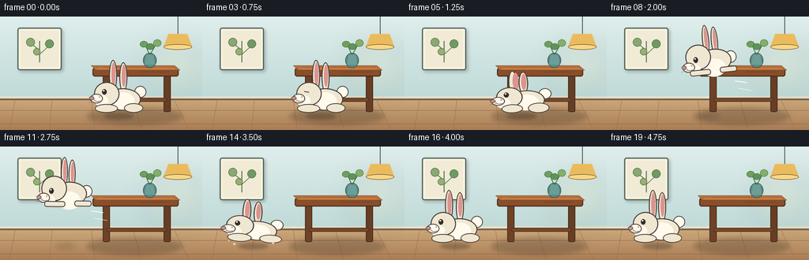
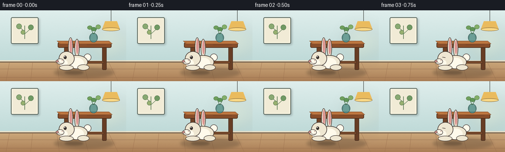

CODING AGENTS AS PIXEL WORLD MODELS
traex/GPT-5.6-Sol · dynamic_spatial_relationship_0019
点击播放 · 原生 RGB 像素
逐轮保存的候选
回放视频、检查图与代码变化。
每份候选均可单独播放。实际图片检查记录在下方工具轨迹中。
候选 01播放与检查图
点击播放 · 原生 RGB 像素


展开代码变化
--- 上一保存版本
+++ 本次保存版本
@@ -0,0 +1,225 @@
+from pathlib import Path
+import math
+import numpy as np
+from PIL import Image, ImageDraw, ImageFilter
+import artifact_io
+
+# A softly illustrated, fixed-camera room. Everything is drawn at 4x and downsampled.
+W, H, N, SCALE = 256, 144, 20, 4
+SW, SH = W*SCALE, H*SCALE
+rng = np.random.default_rng(19)
+
+def P(v): return int(round(v*SCALE))
+def box(x0,y0,x1,y1): return tuple(P(v) for v in (x0,y0,x1,y1))
+def pts(seq): return [(P(x),P(y)) for x,y in seq]
+
+def ellipse(d, b, fill, outline=None, width=1):
+ d.ellipse(box(*b), fill=fill, outline=outline, width=P(width) if outline else 1)
+def rounded(d, b, radius, fill, outline=None, width=1):
+ d.rounded_rectangle(box(*b), radius=P(radius), fill=fill, outline=outline,
+ width=P(width) if outline else 1)
+def line(d, xy, fill, width=1, joint='curve'):
+ d.line(pts(xy), fill=fill, width=P(width), joint=joint)
+
+def make_room():
+ # gentle wall/floor gradients plus very restrained texture
+ yy = np.arange(SH)[:,None]
+ wall_top = np.array([223,238,236], float)
+ wall_bot = np.array([191,218,216], float)
+ t = np.minimum(yy/(104*SCALE),1.0)[...,None]
+ arr = wall_top[None,None,:]*(1-t) + wall_bot[None,None,:]*t
+ arr = np.broadcast_to(arr, (SH,SW,3)).copy()
+ floor = yy[:,0] >= P(104)
+ ft = np.clip((yy[:,0]-P(104))/P(40),0,1)[:,None]
+ floor_col = np.array([205,169,124])[None,:]*(1-ft)+np.array([169,125,85])[None,:]*ft
+ arr[floor,:,:] = floor_col[floor,None,:]
+ noise = rng.normal(0, 1.25, (SH,SW,1))
+ arr = np.clip(arr+noise,0,255).astype(np.uint8)
+ im=Image.fromarray(arr,'RGB')
+ d=ImageDraw.Draw(im)
+ # baseboard and floorboards
+ d.rectangle(box(0,101.5,256,105), fill=(235,226,202))
+ d.rectangle(box(0,104,256,106), fill=(121,99,78))
+ for y in (119,136): line(d,[(0,y),(256,y)],(142,102,73),.6)
+ for x0,xb in ((19,12),(66,62),(115,120),(168,179),(220,239)):
+ line(d,[(x0,105),(xb,144)],(154,111,78),.6)
+ # framed botanical print, left upper wall
+ shadow=Image.new('RGBA',(SW,SH),(0,0,0,0)); sd=ImageDraw.Draw(shadow)
+ rounded(sd,(24,16,80,70),3,(51,64,67,70)); shadow=shadow.filter(ImageFilter.GaussianBlur(P(2)))
+ im=Image.alpha_composite(im.convert('RGBA'),shadow); d=ImageDraw.Draw(im)
+ rounded(d,(22,14,78,68),3,(248,242,222,255),(87,100,91,255),1.4)
+ rounded(d,(26,18,74,64),1,(241,235,214,255))
+ line(d,[(50,58),(50,31)],(91,121,84,255),1.2)
+ line(d,[(50,43),(39,34)],(91,121,84,255),1)
+ line(d,[(50,48),(62,37)],(91,121,84,255),1)
+ ellipse(d,(33,27,44,38),(137,169,114,255),(87,121,80,255),.7)
+ ellipse(d,(57,29,68,40),(112,153,99,255),(87,121,80,255),.7)
+ ellipse(d,(42,40,51,49),(151,176,112,255),(87,121,80,255),.7)
+ # slim pendant lamp on right, adding visual depth
+ line(d,[(225,0),(225,22)],(73,78,73,255),1)
+ d.polygon(pts([(213,22),(237,22),(243,38),(207,38)]),fill=(239,191,95,255))
+ ellipse(d,(207,35,243,42),(255,220,135,255),(118,94,55,255),.8)
+ # warm pool of light on wall
+ glow=Image.new('RGBA',(SW,SH),(0,0,0,0)); gd=ImageDraw.Draw(glow)
+ gd.ellipse(box(183,29,256,104),fill=(255,224,143,25)); glow=glow.filter(ImageFilter.GaussianBlur(P(14)))
+ return Image.alpha_composite(im,glow)
+
+ROOM=make_room()
+
+def draw_table(im):
+ # shadows establish the table as stationary and behind the rabbit
+ sh=Image.new('RGBA',(SW,SH),(0,0,0,0)); s=ImageDraw.Draw(sh)
+ s.ellipse(box(110,116,231,137),fill=(54,42,31,68)); sh=sh.filter(ImageFilter.GaussianBlur(P(3)))
+ im.alpha_composite(sh)
+ d=ImageDraw.Draw(im)
+ # back portions of legs
+ rounded(d,(130,68,139,121),2,(111,66,38,255),(70,46,31,255),1)
+ rounded(d,(207,68,216,121),2,(103,61,36,255),(70,46,31,255),1)
+ # subtle lower braces
+ rounded(d,(135,103,211,108),2,(119,72,42,255),(70,46,31,255),.8)
+ # tabletop apron and top, three-dimensional and unmistakable
+ rounded(d,(117,65,226,76),3,(137,78,42,255),(75,46,29,255),1.2)
+ d.polygon(pts([(115,62),(221,62),(228,68),(121,68)]),fill=(181,111,60,255),outline=(75,46,29,255))
+ line(d,[(123,66),(221,66)],(214,143,78,255),.8)
+ # visible wood grain
+ line(d,[(132,64.4),(168,64),(192,65)],(124,72,40,255),.45)
+ line(d,[(176,70),(214,70)],(101,59,35,255),.45)
+ # vase on tabletop
+ ellipse(d,(181,46,198,65),(90,137,131,255),(47,83,80,255),.8)
+ d.polygon(pts([(185,48),(194,48),(196,61),(183,61)]),fill=(107,158,150,255))
+ line(d,[(189,48),(184,36)],(66,112,68,255),1)
+ line(d,[(190,48),(198,34)],(66,112,68,255),1)
+ ellipse(d,(177,31,187,39),(111,159,93,255),(63,105,58,255),.6)
+ ellipse(d,(194,29,204,38),(132,175,105,255),(63,105,58,255),.6)
+ ellipse(d,(185,34,195,42),(95,148,86,255),(63,105,58,255),.6)
+
+def rabbit_sprite(pose, blink=False, ear_sway=0.0):
+ # local logical canvas; the rabbit faces left throughout its jump
+ s=SCALE
+ sp=Image.new('RGBA',(P(76),P(78)),(0,0,0,0)); d=ImageDraw.Draw(sp)
+ dark=(74,63,57,255); fur=(239,231,210,255); light=(255,250,235,255); shade=(208,195,174,255)
+ pink=(219,148,144,255)
+ if pose=='crouch':
+ # ears tip backward in anticipation
+ d.ellipse(box(23,9,33,42),fill=fur,outline=dark,width=P(1.2))
+ d.ellipse(box(28,12,35,36),fill=pink)
+ d.ellipse(box(35,11,46,42),fill=fur,outline=dark,width=P(1.2))
+ d.ellipse(box(38,14,44,36),fill=pink)
+ body=(22,37,65,65); head=(8,32,39,60); foot_y=65
+ elif pose=='stretch':
+ # streamlined airborne pose
+ d.ellipse(box(31+ear_sway,1,40+ear_sway,38),fill=fur,outline=dark,width=P(1.2))
+ d.ellipse(box(34+ear_sway,4,38+ear_sway,31),fill=pink)
+ d.ellipse(box(42,4,51,40),fill=fur,outline=dark,width=P(1.2))
+ d.ellipse(box(45,7,49,33),fill=pink)
+ body=(22,31,66,60); head=(7,24,40,55); foot_y=62
+ elif pose=='land':
+ d.ellipse(box(25,7,35,42),fill=fur,outline=dark,width=P(1.2))
+ d.ellipse(box(28,10,33,35),fill=pink)
+ d.ellipse(box(38,10,48,43),fill=fur,outline=dark,width=P(1.2))
+ d.ellipse(box(41,13,46,36),fill=pink)
+ body=(21,38,66,66); head=(7,31,39,60); foot_y=67
+ else:
+ # alert resting pose
+ d.ellipse(box(26+ear_sway,2,36+ear_sway,42),fill=fur,outline=dark,width=P(1.2))
+ d.ellipse(box(29+ear_sway,5,34+ear_sway,35),fill=pink)
+ d.ellipse(box(39,5,49,43),fill=fur,outline=dark,width=P(1.2))
+ d.ellipse(box(42,8,47,36),fill=pink)
+ body=(21,38,66,66); head=(7,30,39,60); foot_y=67
+ # tail behind body
+ d.ellipse(box(58,35,73,50),fill=light,outline=dark,width=P(1.1))
+ # body, chest and head
+ d.ellipse(box(*body),fill=fur,outline=dark,width=P(1.3))
+ d.ellipse(box(28,43,58,65),fill=light)
+ d.ellipse(box(*head),fill=fur,outline=dark,width=P(1.3))
+ d.ellipse(box(8,47,25,61),fill=light)
+ # muzzle/nose silhouette creates clear left-facing profile
+ d.ellipse(box(2,45,18,57),fill=light,outline=dark,width=P(1.0))
+ d.ellipse(box(1,48,7,53),fill=pink,outline=dark,width=P(.7))
+ line(d,[(7,53),(11,55),(15,54)],dark,.75)
+ # eye and highlight / blink
+ if blink:
+ line(d,[(17,42),(23,43)],dark,1.15)
+ else:
+ d.ellipse(box(17,39,23,46),fill=(50,44,42,255),outline=dark,width=P(.5))
+ d.ellipse(box(18.2,40,20.2,42),fill=(255,255,250,255))
+ # legs adapt to pose
+ if pose=='stretch':
+ rounded(d,(11,55,38,62),3,fur,dark,1)
+ rounded(d,(50,54,72,61),3,fur,dark,1)
+ elif pose=='crouch':
+ d.ellipse(box(14,56,39,68),fill=fur,outline=dark,width=P(1))
+ d.ellipse(box(45,55,70,69),fill=fur,outline=dark,width=P(1))
+ elif pose=='land':
+ d.ellipse(box(9,57,37,69),fill=fur,outline=dark,width=P(1))
+ d.ellipse(box(46,57,72,69),fill=fur,outline=dark,width=P(1))
+ else:
+ d.ellipse(box(8,58,37,69),fill=fur,outline=dark,width=P(1))
+ d.ellipse(box(45,57,69,69),fill=fur,outline=dark,width=P(1))
+ # small cheek marks and whiskers
+ d.ellipse(box(13,48,15,50),fill=(202,153,140,210))
+ line(d,[(8,52),(-1,49)],(97,85,77,210),.45)
+ line(d,[(9,54),(0,56)],(97,85,77,210),.45)
+ return sp
+
+def rabbit_state(i):
+ # Readable staging: hold in front, crouch, broad leftward arc, settle left.
+ if i <= 4:
+ return 150.0, 124.0, 'rest', 0.0, 1.0, 1.0
+ if i == 5:
+ return 148.0, 125.5, 'crouch', 2.0, 1.08, .91
+ if 6 <= i <= 13:
+ u=(i-6)/7.0
+ smooth=u*u*(3-2*u)
+ x=145+(67-145)*smooth
+ ground=123.5
+ y=ground-47*math.sin(math.pi*u)
+ # lean into movement, then level for landing
+ angle=10*(1-u)-5*u
+ return x,y,'stretch',angle,.98,1.04
+ if i == 14:
+ return 64.5,124.5,'land',-3,1.10,.88
+ if i == 15:
+ return 64.0,125.0,'crouch',0,1.06,.93
+ return 64.0,124.0,'rest',0,1,1
+
+def compose(i):
+ im=ROOM.copy()
+ draw_table(im)
+ x,y,pose,ang,sx,sy=rabbit_state(i)
+ # Ground shadow: tight while grounded, diffuse/small when high.
+ jump_height=max(0,124-y)
+ shadow=Image.new('RGBA',(SW,SH),(0,0,0,0)); sd=ImageDraw.Draw(shadow)
+ shadow_w=max(17,38-jump_height*.32); alpha=int(max(25,82-jump_height))
+ sd.ellipse(box(x-shadow_w/2,122.5,x+shadow_w/2,130),fill=(49,38,29,alpha))
+ shadow=shadow.filter(ImageFilter.GaussianBlur(P(2.0+jump_height/32)))
+ im.alpha_composite(shadow)
+ # A few painterly speed accents only at the fastest part of the leap.
+ if 8 <= i <= 11:
+ ad=ImageDraw.Draw(im)
+ fade=105 if i in (9,10) else 70
+ line(ad,[(x+33,y-5),(x+48,y-3)],(255,255,245,fade),1.2)
+ line(ad,[(x+37,y+4),(x+53,y+7)],(255,255,245,fade),.8)
+ blink = i in (3,18)
+ ear_sway = 1.2*math.sin(i*.75)
+ sp=rabbit_sprite(pose,blink,ear_sway)
+ if sx != 1 or sy != 1:
+ sp=sp.resize((max(1,int(sp.width*sx)),max(1,int(sp.height*sy))),Image.Resampling.BICUBIC)
+ if abs(ang)>0.1:
+ sp=sp.rotate(ang,resample=Image.Resampling.BICUBIC,expand=True)
+ # Anchor local horizontal center to x, and local feet to y.
+ px=P(x)-sp.width//2; py=P(y)-sp.height+P(7)
+ im.alpha_composite(sp,(px,py))
+ # tiny dust motes at landing reinforce contact, not an additional object
+ if i in (14,15):
+ dd=ImageDraw.Draw(im)
+ for dx,dy,r,a in [(-24,-1,1.5,115),(25,-2,1.2,100),(-31,-5,.8,80)]:
+ ellipse(dd,(x+dx-r,y+dy-r,x+dx+r,y+dy+r),(231,207,164,a))
+ return np.asarray(im.convert('RGB').resize((W,H),Image.Resampling.LANCZOS),dtype=np.uint8)
+
+def main():
+ frames=np.stack([compose(i) for i in range(N)],axis=0)
+ artifact_io.save(frames,Path(__file__).resolve().parent)
+
+if __name__=='__main__':
+ main()
可观测工具轨迹
实际执行的命令与返回图片。
命令 1exit 0
/bin/bash -lc "cat prompt.txt && printf '\\n--- GENERATION_RULES ---\\n' && cat GENERATION_RULES.md && printf '\\n--- TASK_SPEC ---\\n' && cat task_spec.json"
命令 2exit 0
/bin/bash -lc "find . -maxdepth 2 -type f -printf '%p\\n' | sort && printf '\\n--- tools ---\\n' && command -v ffmpeg || true && command -v python3 || true"
命令 3exit 0
/bin/bash -lc 'cat artifact_io.py'
命令 4exit 0
/bin/bash -lc "cat > generate.py <<'PY'
from pathlib import Path
import math
import numpy as np
from PIL import Image, ImageDraw, ImageFilter
import artifact_io
# A softly illustrated, fixed-camera room. Everything is drawn at 4x and downsampled.
W, H, N, SCALE = 256, 144, 20, 4
SW, SH = W*SCALE, H*SCALE
rng = np.random.default_rng(19)
def P(v): return int(round(v*SCALE))
def box(x0,y0,x1,y1): return tuple(P(v) for v in (x0,y0,x1,y1))
def pts(seq): return [(P(x),P(y)) for x,y in seq]
def ellipse(d, b, fill, outline=None, width=1):
d.ellipse(box(*b), fill=fill, outline=outline, width=P(width) if outline else 1)
def rounded(d, b, radius, fill, outline=None, width=1):
d.rounded_rectangle(box(*b), radius=P(radius), fill=fill, outline=outline,
width=P(width) if outline else 1)
def line(d, xy, fill, width=1, joint='curve'):
d.line(pts(xy), fill=fill, width=P(width), joint=joint)
def make_room():
# gentle wall/floor gradients plus very restrained texture
yy = np.arange(SH)[:,None]
wall_top = np.array([223,238,236], float)
wall_bot = np.array([191,218,216], float)
t = np.minimum(yy/(104*SCALE),1.0)[...,None]
arr = wall_top[None,None,:]*(1-t) + wall_bot[None,None,:]*t
arr = np.broadcast_to(arr, (SH,SW,3)).copy()
floor = yy[:,0] >= P(104)
ft = np.clip((yy[:,0]-P(104))/P(40),0,1)[:,None]
floor_col = np.array([205,169,124])[None,:]*(1-ft)+np.array([169,125,85])[None,:]*ft
arr[floor,:,:] = floor_col[floor,None,:]
noise = rng.normal(0, 1.25, (SH,SW,1))
arr = np.clip(arr+noise,0,255).astype(np.uint8)
im=Image.fromarray(arr,'RGB')
d=ImageDraw.Draw(im)
# baseboard and floorboards
d.rectangle(box(0,101.5,256,105), fill=(235,226,202))
d.rectangle(box(0,104,256,106), fill=(121,99,78))
for y in (119,136): line(d,[(0,y),(256,y)],(142,102,73),.6)
for x0,xb in ((19,12),(66,62),(115,120),(168,179),(220,239)):
line(d,[(x0,105),(xb,144)],(154,111,78),.6)
# framed botanical print, left upper wall
shadow=Image.new('RGBA',(SW,SH),(0,0,0,0)); sd=ImageDraw.Draw(shadow)
rounded(sd,(24,16,80,70),3,(51,64,67,70)); shadow=shadow.filter(ImageFilter.GaussianBlur(P(2)))
im=Image.alpha_composite(im.convert('RGBA'),shadow); d=ImageDraw.Draw(im)
rounded(d,(22,14,78,68),3,(248,242,222,255),(87,100,91,255),1.4)
rounded(d,(26,18,74,64),1,(241,235,214,255))
line(d,[(50,58),(50,31)],(91,121,84,255),1.2)
line(d,[(50,43),(39,34)],(91,121,84,255),1)
line(d,[(50,48),(62,37)],(91,121,84,255),1)
ellipse(d,(33,27,44,38),(137,169,114,255),(87,121,80,255),.7)
ellipse(d,(57,29,68,40),(112,153,99,255),(87,121,80,255),.7)
ellipse(d,(42,40,51,49),(151,176,112,255),(87,121,80,255),.7)
# slim pendant lamp on right, adding visual depth
line(d,[(225,0),(225,22)],(73,78,73,255),1)
d.polygon(pts([(213,22),(237,22),(243,38),(207,38)]),fill=(239,191,95,255))
ellipse(d,(207,35,243,42),(255,220,135,255),(118,94,55,255),.8)
# warm pool of light on wall
glow=Image.new('RGBA',(SW,SH),(0,0,0,0)); gd=ImageDraw.Draw(glow)
gd.ellipse(box(183,29,256,104),fill=(255,224,143,25)); glow=glow.filter(ImageFilter.GaussianBlur(P(14)))
return Image.alpha_composite(im,glow)
ROOM=make_room()
def draw_table(im):
# shadows establish the table as stationary and behind the rabbit
sh=Image.new('RGBA',(SW,SH),(0,0,0,0)); s=ImageDraw.Draw(sh)
s.ellipse(box(110,116,231,137),fill=(54,42,31,68)); sh=sh.filter(ImageFilter.GaussianBlur(P(3)))
im.alpha_composite(sh)
d=ImageDraw.Draw(im)
# back portions of legs
rounded(d,(130,68,139,121),2,(111,66,38,255),(70,46,31,255),1)
rounded(d,(207,68,216,121),2,(103,61,36,255),(70,46,31,255),1)
# subtle lower braces
rounded(d,(135,103,211,108),2,(119,72,42,255),(70,46,31,255),.8)
# tabletop apron and top, three-dimensional and unmistakable
rounded(d,(117,65,226,76),3,(137,78,42,255),(75,46,29,255),1.2)
d.polygon(pts([(115,62),(221,62),(228,68),(121,68)]),fill=(181,111,60,255),outline=(75,46,29,255))
line(d,[(123,66),(221,66)],(214,143,78,255),.8)
# visible wood grain
line(d,[(132,64.4),(168,64),(192,65)],(124,72,40,255),.45)
line(d,[(176,70),(214,70)],(101,59,35,255),.45)
# vase on tabletop
ellipse(d,(181,46,198,65),(90,137,131,255),(47,83,80,255),.8)
d.polygon(pts([(185,48),(194,48),(196,61),(183,61)]),fill=(107,158,150,255))
line(d,[(189,48),(184,36)],(66,112,68,255),1)
line(d,[(190,48),(198,34)],(66,112,68,255),1)
ellipse(d,(177,31,187,39),(111,159,93,255),(63,105,58,255),.6)
ellipse(d,(194,29,204,38),(132,175,105,255),(63,105,58,255),.6)
ellipse(d,(185,34,195,42),(95,148,86,255),(63,105,58,255),.6)
def rabbit_sprite(pose, blink=False, ear_sway=0.0):
# local logical canvas; the rabbit faces left throughout its jump
s=SCALE
sp=Image.new('RGBA',(P(76),P(78)),(0,0,0,0)); d=ImageDraw.Draw(sp)
dark=(74,63,57,255); fur=(239,231,210,255); light=(255,250,235,255); shade=(208,195,174,255)
pink=(219,148,144,255)
if pose=='crouch':
# ears tip backward in anticipation
d.ellipse(box(23,9,33,42),fill=fur,outline=dark,width=P(1.2))
d.ellipse(box(28,12,35,36),fill=pink)
d.ellipse(box(35,11,46,42),fill=fur,outline=dark,width=P(1.2))
d.ellipse(box(38,14,44,36),fill=pink)
body=(22,37,65,65); head=(8,32,39,60); foot_y=65
elif pose=='stretch':
# streamlined airborne pose
d.ellipse(box(31+ear_sway,1,40+ear_sway,38),fill=fur,outline=dark,width=P(1.2))
d.ellipse(box(34+ear_sway,4,38+ear_sway,31),fill=pink)
d.ellipse(box(42,4,51,40),fill=fur,outline=dark,width=P(1.2))
d.ellipse(box(45,7,49,33),fill=pink)
body=(22,31,66,60); head=(7,24,40,55); foot_y=62
elif pose=='land':
d.ellipse(box(25,7,35,42),fill=fur,outline=dark,width=P(1.2))
d.ellipse(box(28,10,33,35),fill=pink)
d.ellipse(box(38,10,48,43),fill=fur,outline=dark,width=P(1.2))
d.ellipse(box(41,13,46,36),fill=pink)
body=(21,38,66,66); head=(7,31,39,60); foot_y=67
else:
# alert resting pose
d.ellipse(box(26+ear_sway,2,36+ear_sway,42),fill=fur,outline=dark,width=P(1.2))
d.ellipse(box(29+ear_sway,5,34+ear_sway,35),fill=pink)
d.ellipse(box(39,5,49,43),fill=fur,outline=dark,width=P(1.2))
d.ellipse(box(42,8,47,36),fill=pink)
body=(21,38,66,66); head=(7,30,39,60); foot_y=67
# tail behind body
d.ellipse(box(58,35,73,50),fill=light,outline=dark,width=P(1.1))
# body, chest and head
d.ellipse(box(*body),fill=fur,outline=dark,width=P(1.3))
d.ellipse(box(28,43,58,65),fill=light)
d.ellipse(box(*head),fill=fur,outline=dark,width=P(1.3))
d.ellipse(box(8,47,25,61),fill=light)
# muzzle/nose silhouette creates clear left-facing profile
d.ellipse(box(2,45,18,57),fill=light,outline=dark,width=P(1.0))
d.ellipse(box(1,48,7,53),fill=pink,outline=dark,width=P(.7))
line(d,[(7,53),(11,55),(15,54)],dark,.75)
# eye and highlight / blink
if blink:
line(d,[(17,42),(23,43)],dark,1.15)
else:
d.ellipse(box(17,39,23,46),fill=(50,44,42,255),outline=dark,width=P(.5))
d.ellipse(box(18.2,40,20.2,42),fill=(255,255,250,255))
# legs adapt to pose
if pose=='stretch':
rounded(d,(11,55,38,62),3,fur,dark,1)
rounded(d,(50,54,72,61),3,fur,dark,1)
elif pose=='crouch':
d.ellipse(box(14,56,39,68),fill=fur,outline=dark,width=P(1))
d.ellipse(box(45,55,70,69),fill=fur,outline=dark,width=P(1))
elif pose=='land':
d.ellipse(box(9,57,37,69),fill=fur,outline=dark,width=P(1))
d.ellipse(box(46,57,72,69),fill=fur,outline=dark,width=P(1))
else:
d.ellipse(box(8,58,37,69),fill=fur,outline=dark,width=P(1))
d.ellipse(box(45,57,69,69),fill=fur,outline=dark,width=P(1))
# small cheek marks and whiskers
d.ellipse(box(13,48,15,50),fill=(202,153,140,210))
line(d,[(8,52),(-1,49)],(97,85,77,210),.45)
line(d,[(9,54),(0,56)],(97,85,77,210),.45)
return sp
def rabbit_state(i):
# Readable staging: hold in front, crouch, broad leftward arc, settle left.
if i <= 4:
return 150.0, 124.0, 'rest', 0.0, 1.0, 1.0
if i == 5:
return 148.0, 125.5, 'crouch', 2.0, 1.08, .91
if 6 <= i <= 13:
u=(i-6)/7.0
smooth=u*u*(3-2*u)
x=145+(67-145)*smooth
ground=123.5
y=ground-47*math.sin(math.pi*u)
# lean into movement, then level for landing
angle=10*(1-u)-5*u
return x,y,'stretch',angle,.98,1.04
if i == 14:
return 64.5,124.5,'land',-3,1.10,.88
if i == 15:
return 64.0,125.0,'crouch',0,1.06,.93
return 64.0,124.0,'rest',0,1,1
def compose(i):
im=ROOM.copy()
draw_table(im)
x,y,pose,ang,sx,sy=rabbit_state(i)
# Ground shadow: tight while grounded, diffuse/small when high.
jump_height=max(0,124-y)
shadow=Image.new('RGBA',(SW,SH),(0,0,0,0)); sd=ImageDraw.Draw(shadow)
shadow_w=max(17,38-jump_height*.32); alpha=int(max(25,82-jump_height))
sd.ellipse(box(x-shadow_w/2,122.5,x+shadow_w/2,130),fill=(49,38,29,alpha))
shadow=shadow.filter(ImageFilter.GaussianBlur(P(2.0+jump_height/32)))
im.alpha_composite(shadow)
# A few painterly speed accents only at the fastest part of the leap.
if 8 <= i <= 11:
ad=ImageDraw.Draw(im)
fade=105 if i in (9,10) else 70
line(ad,[(x+33,y-5),(x+48,y-3)],(255,255,245,fade),1.2)
line(ad,[(x+37,y+4),(x+53,y+7)],(255,255,245,fade),.8)
blink = i in (3,18)
ear_sway = 1.2*math.sin(i*.75)
sp=rabbit_sprite(pose,blink,ear_sway)
if sx "'!= 1 or sy != 1:
sp=sp.resize((max(1,int(sp.width*sx)),max(1,int(sp.height*sy))),Image.Resampling.BICUBIC)
if abs(ang)>0.1:
sp=sp.rotate(ang,resample=Image.Resampling.BICUBIC,expand=True)
# Anchor local horizontal center to x, and local feet to y.
px=P(x)-sp.width//2; py=P(y)-sp.height+P(7)
im.alpha_composite(sp,(px,py))
# tiny dust motes at landing reinforce contact, not an additional object
if i in (14,15):
dd=ImageDraw.Draw(im)
for dx,dy,r,a in [(-24,-1,1.5,115),(25,-2,1.2,100),(-31,-5,.8,80)]:
ellipse(dd,(x+dx-r,y+dy-r,x+dx+r,y+dy+r),(231,207,164,a))
return np.asarray(im.convert('"'RGB').resize((W,H),Image.Resampling.LANCZOS),dtype=np.uint8)
def main():
frames=np.stack([compose(i) for i in range(N)],axis=0)
artifact_io.save(frames,Path(__file__).resolve().parent)
if __name__=='__main__':
main()
PY
python3 generate.py
python3 - <<'PY'
import numpy as np
from PIL import Image
z=np.load('pixels.npz')['pixels']
print('pixels',z.shape,z.dtype,'frames',len(list(__import__('pathlib').Path('frames').glob('*.png'))))
for i in [0,5,6,9,13,14,19]:
im=np.array(Image.open(f'frames/{i:02}.png'))
print(i, im.shape, im.min(),im.max(),len(np.unique(im.reshape(-1,3),axis=0)))
PY"命令 5exit 0
/bin/bash -lc "ls -lh generate.py pixels.npz inspection.png index.html frames/00.png frames/09.png frames/19.png && python3 - <<'PY'
from PIL import Image
import numpy as np
# Basic temporal validation and report changed-pixel proportions.
a=[np.asarray(Image.open(f'frames/{i:02}.png')).astype(int) for i in range(20)]
print('mean frame deltas:', [round(np.abs(a[i]-a[i-1]).mean(),2) for i in range(1,20)])
print('exact RGB stack:', np.stack(a).shape, np.stack(a).dtype)
PY"保存候选 1 份；完成命令 5 次；可验证图片返回 0 张。原始 API 响应与完整日志保留在本地。